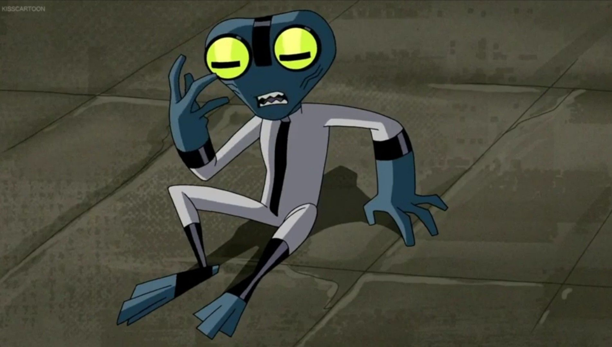

|  |
HistoriaA história de Ben 10 gira em torno de um garoto chamado Ben Tennyson, que descobre um dispositivo alienígena chamado Omnitrix. O Omnitrix permite que Ben se transforme em diferentes formas de alienígenas, cada uma com habilidades especiais. No início, Ben vê o Omnitrix como uma oportunidade para se divertir e se exibir, mas logo percebe que tem a responsabilidade de usar seus poderes para proteger a Terra de ameaças alienígenas e criminosos intergalácticos. |
|
Ao lado de sua prima Gwen e seu avô Max, Ben embarca em várias aventuras, enfrentando vilões alienígenas e desvendando segredos sobre o Omnitrix e sua conexão com outros seres extraterrestres. Ao longo do caminho, ele aprende a usar as diferentes formas alienígenas do Omnitrix de maneira estratégica e desenvolve suas habilidades de luta e trabalho em equipe. A série continua com várias sequências e spin-offs, explorando o universo expandido de Ben 10 e apresentando novos personagens e desafios. No geral, a história de Ben 10 gira em torno das aventuras de Ben enquanto ele usa seus poderes alienígenas para proteger a Terra e descobrir o verdadeiro propósito do Omnitrix. |
|
Gustavo Henrique A. dos Santos - 2023 |